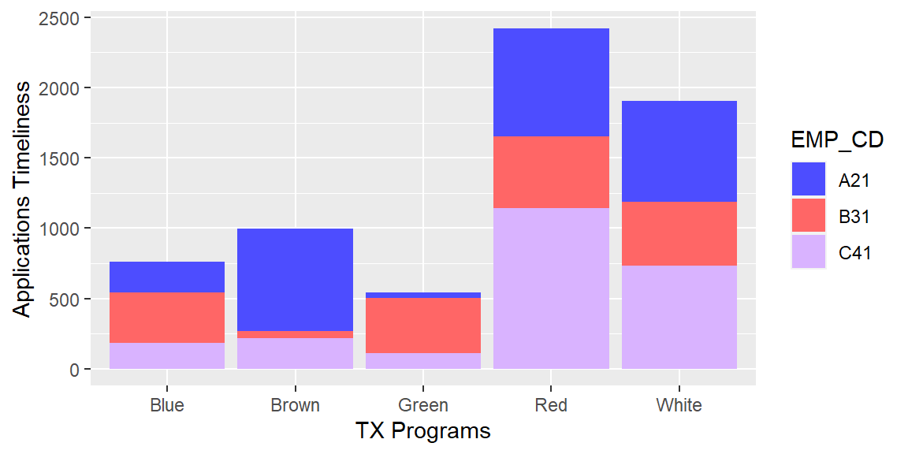

Shiny
Top
Last Update: July 19, 2021
Shiny
This R Markdown document is made interactive using Shiny. To learn more, see Interactive Documents.
Inputs and Outputs
You can embed Shiny inputs and outputs in your document. Outputs are automatically updated whenever inputs change. This demonstrates how a standard R plot can be made interactive by wrapping it in the Shiny renderPlot function. The selectInput and sliderInput functions create the input widgets used to drive the plot.
Interactive Plot 1
Interactive Plot 2
ui <- fluidPage(
tableOutput("static"),
dataTableOutput("dynamic")
)
server <- function(input, output, session) {
output$static <- renderTable(head(mtcars))
output$dynamic <- renderDataTable(mtcars, options = list(pageLength = 5))
}
shinyApp(ui, server)Embedded Application
It’s also possible to embed an entire Shiny application within an R Markdown document using the shinyAppDir function. This example embeds a Shiny application located in another directory:
Note the use of the height parameter to determine how much vertical space the embedded application should occupy.
You can also use the shinyApp function to define an application inline rather then in an external directory.
In all of R code chunks above the echo = FALSE attribute is used. This is to prevent the R code within the chunk from rendering in the document alongside the Shiny components.
R - Performance Operations
A dataset extract oriented to evaluate the daily performance operations with more than 1.4 million rows per month and around 60 input variables. A process to extract, clean and transform the input data to build meaningful charts, graphs, key performance indicators, and dashboards to unhide relevant and worth information about the daily operations performance to managers, directors and top stakeholders in one organizations with more than 10,000 employees. This article is all about that.
# OXLSX_12
# print(dset, n=2)
OXLSX_12$APP_PERCENT <- round(OXLSX_12$APP_PERCENT * 100, digits = 1)
OXLSX_12$REDET_PERCENT <- round(OXLSX_12$REDET_PERCENT * 100, digits = 1)
OXLSX_12$AVG_DISP_DAYLY <- round(OXLSX_12$AVG_DISP_DAYLY, digits = 0)
OXLSX_12$AVG_DTD <- round(OXLSX_12$AVG_DTD, digits = 1)
OXLSX_12$DTD_0_PERC <- round(OXLSX_12$DTD_0_PERC * 100, digits = 1)
# as.data.frame(head(OXLSX_12[,c(2,4:5,7:13)]))
kable(OXLSX_12[,c(2,4,5,7:13)], caption = 'OXLSX_12 Table')| PROG_CD | APP_TOTAL | APP_PERCENT | REDET_TOTAL | REDET_PERCENT | TOTAL_DISP | AVG_DISP_DAYLY | AVG_DTD | TOT_DTD_0 | DTD_0_PERC |
|---|---|---|---|---|---|---|---|---|---|
| Child | 34281 | 95.3 | 7594 | 91.1 | 41875 | 13958 | 32.2 | 3026 | 8.8 |
| Health | 24106 | 94.8 | 3401 | 96.5 | 27507 | 9169 | 13.4 | 2439 | 10.1 |
| Pregnant | 5997 | 94.9 | 366 | 96.2 | 6363 | 2121 | 14.3 | 383 | 6.4 |
| Senior | 7338 | 96.5 | 758 | 99.7 | 8096 | 2699 | 18.6 | 157 | 2.1 |
| Total | 71722 | 95.2 | 12119 | 93.3 | 83841 | 27947 | 78.6 | 6005 | 8.4 |
The organization cares about, a) the number of applications citizens do to be granted for social benefits, and b) the performance of the employees disposing the applications. Social benefits are categorized by their nature such as claiming for food, child, older, disabilities, pregnancy benefits. Complexity of the applications is based on the requirements for each type of applications.
Plot 1
p_meds <- ddply(dset, .(PROG_CD), summarise, med = median(APP_TIMELY))
ggplot(dset, aes(x=PROG_CD , y=APP_TIMELY)) +
geom_boxplot(color='#3d3d5c', fill='#ff6666') +
geom_text(data=p_meds, aes(x=PROG_CD, y=med, label=med),
size=3, vjust=-0.75, color='#3d3d5c') +
xlab('TX Programs') +
ylab('Applications Timeliness')
Employees are classified by their gained skills on process complex applications; it translates in the time taking to process the applications. So, standards evaluation for workers is based on the number of applications processed in the number of working hours. The data processing is focus on be a high-performance process by itself. The end products must be for daily, monthly, or annual periods, which take to cumulate data and use timeseries data for the analysis, charts, and graphs.
Plot 2
ggplot(dset, aes(x= PROG_CD, y=APP_TIMELY, fill=EMP_CD)) +
geom_col() +
scale_fill_manual( values = luisPallete ) +
xlab('TX Programs') +
ylab('Applications Timeliness')
Bibliography
.